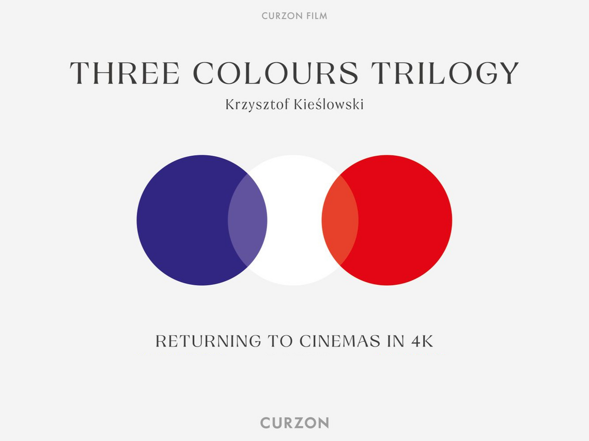
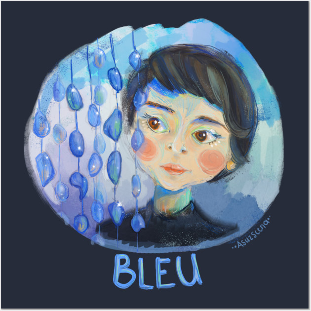
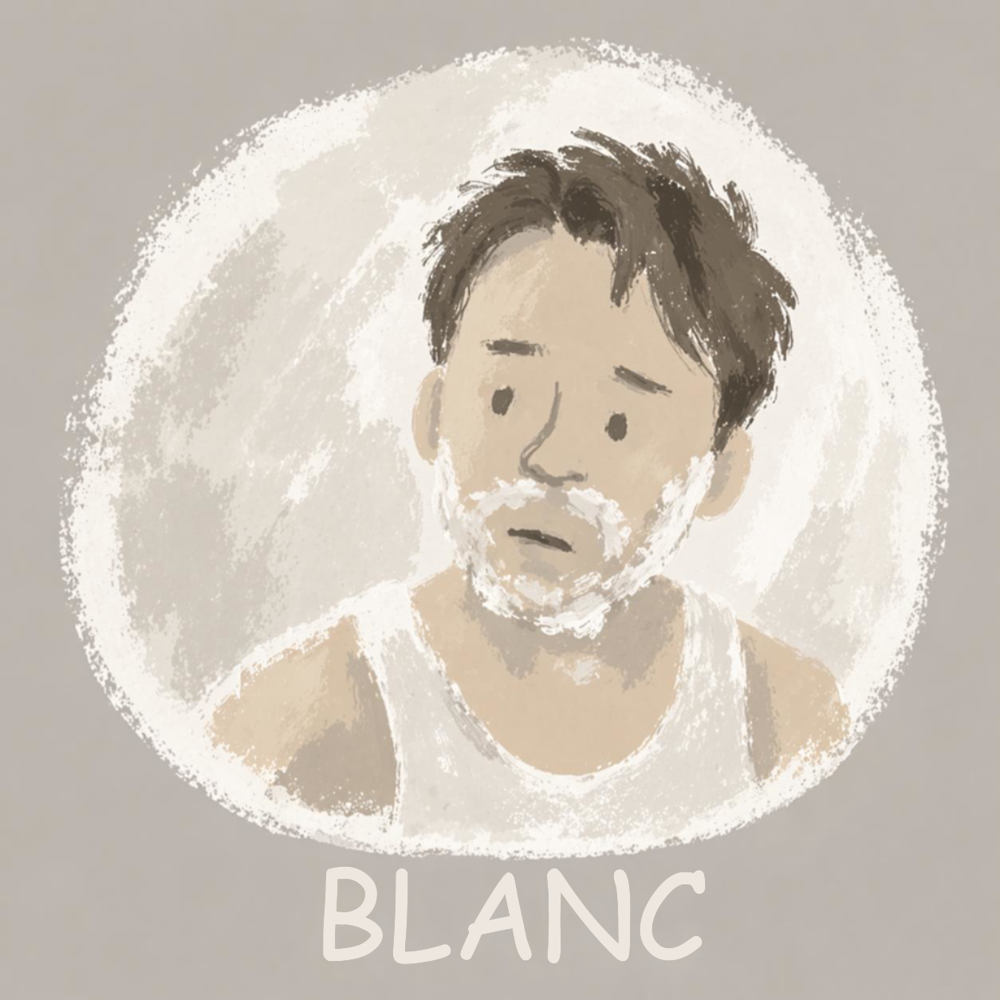
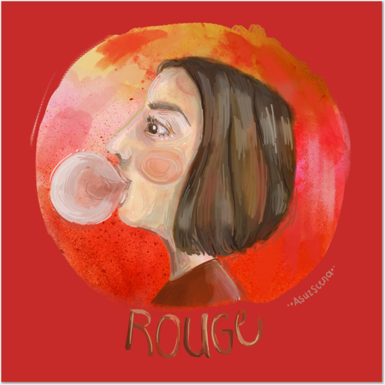

Three Colors Trilogy
Published: July 1994
Krzysztof Kieślowski's "Three Colors Trilogy" is a monumental work in European cinema. Consisting of three films—"Blue," "White," and "Red"—each representing a value of the French flag, this trilogy explores profound themes of liberty, equality, and fraternity through intricately woven narratives.

Each film stands alone as a complete work while contributing to a larger meditation on human connection and coincidence. Kieślowski's masterful direction and innovative cinematography create visually stunning pieces that resonate on both emotional and intellectual levels. The trilogy's exploration of fate, choice, and interconnected lives remains as relevant today as when it was created.



"Blue" is the most inward of the three films, built around grief, silence, and the difficult idea of liberty. Its blue surfaces feel less like decoration than atmosphere: glass, pools, shadows, and music all press against Julie as she tries to detach herself from the life she has lost.
"White" shifts the register into something sharper and more comic, but its bitterness is just as precise. Equality becomes unstable and transactional here, tied to humiliation, revenge, desire, and the strange ways people try to regain dignity after being reduced by someone they love.
"Red" is the trilogy's warmest and most mysterious movement, using fraternity not as a slogan but as a question about attention, chance, and responsibility. The use of color across the trilogy is particularly noteworthy, with each film dominated by its titular color while conveying deeper symbolic meaning. This is essential viewing for anyone interested in art cinema and philosophical filmmaking.